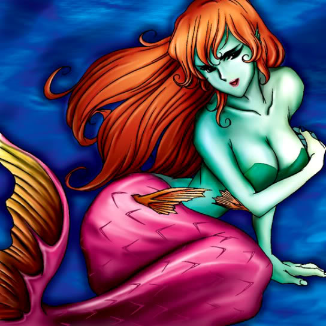

Enchanting Mermaid

STATS
ATK: 1200
DEF: 900DECK COST
Deck Cost per Card: 21Fusion List (18 Possible Fusions)
- Enchanting Mermaid + Ancient Jar = Mystical Sand
- Enchanting Mermaid + Armored Rat = Nekogal #2
- Enchanting Mermaid + Blackland Fire Dragon = Kairyu-Shin
- Enchanting Mermaid + Dancing Elf = Dark Witch
- Enchanting Mermaid + Darkfire Dragon = Kairyu-Shin
- Enchanting Mermaid + Hane-Hane = Nekogal #2
- Enchanting Mermaid + Haniwa = Mystical Sand
- Enchanting Mermaid + Hard Armor = Wow Warrior
- Enchanting Mermaid + Holograph = Misairuzame
- Enchanting Mermaid + Hourglass of Life = Dark Witch
- Enchanting Mermaid + Lady of Faith = Amazon of the Seas
- Enchanting Mermaid + Man-Eating Plant = Queen of Autumn Leaves
- Enchanting Mermaid + Mystical Sheep #1 = Nekogal #2
- Enchanting Mermaid + Mystical Sheep #2 = Nekogal #2
- Enchanting Mermaid + Rainbow Flower = Queen of Autumn Leaves
- Enchanting Mermaid + Root Water = Amazon of the Seas
- Enchanting Mermaid + Waterdragon Fairy = Amazon of the Seas
- Enchanting Mermaid + White Dolphin = Amazon of the Seas